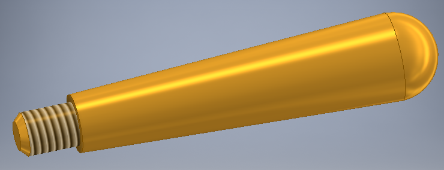

Links

Link for KOMPAS 3D
Link for SolidWorks

Link for Inventor
Link for Mechatronic
Short about me
Hello! I am Mykola Savych. I'm senior teacher of Forestry University. Every time we need new knowledge about world to create new things. CAD-systems help us to create high-technology things for save resources. I teach students to use CAD-systems in study process to create, calculates and writes technical documentations for woodworking machines and components. Our students discovers designing woodworking tools for different woodworking jobs. On my website I want to demonstrate some created elements of projects. These projects has been created by various CAD-systems: KOMPAS 3D, SOLIDWORKS, INVENTOR. You can look at some of these elements and make your own mind about this. May be someone who wants to be engineer and make beautiful things will want first to study and then to use such as these systems. I hope my website will be helpful for other people too.
Links
Link for KOMPAS 3D
Link for SolidWorks
Link for Inventor
Link for Mechatronic
Contacts